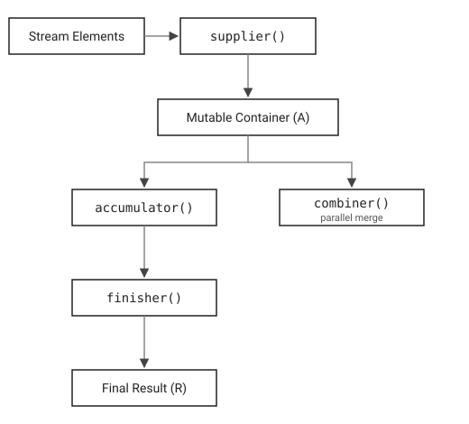

Here’s a complete guide to the Java Stream API Collectors class — one of the most powerful tools for processing and aggregating stream data.
We’ll cover concepts, categories and detailed examples for every major collector.
Collectors?Collectors is a utility class in java.util.stream that provides static factory methods for creating Collector instances.
A Collector defines how to:
List, Map, or String)toList(), toSet(), toCollection()
Collect elements into a list, set, or custom collection.
void main(String[] args) {
List<String> names = List.of("Alice", "Bob", "Charlie", "Alice");
List<String> list = names.stream().collect(Collectors.toList()); allows duplicates
Set<String> set = names.stream().collect(Collectors.toSet()); removes duplicates
LinkedList<String> linkedList = names.stream().collect(Collectors.toCollection(LinkedList::new)); custom
System.out.println(list);
System.out.println(set);
System.out.println(linkedList);
}joining()
Concatenate stream elements into a single String.
List<String> names = List.of("Alice", "Bob", "Charlie");
String joined = names.stream().collect(Collectors.joining(", ", "[", "]"));
System.out.println(joined); [Alice, Bob, Charlie]Parameters:
, )[)])counting()
Count number of elements.
long count = names.stream().collect(Collectors.counting());summingInt(), summingDouble(), summingLong()
List<Integer> numbers = List.of(1, 2, 3, 4);
int sum = numbers.stream().collect(Collectors.summingInt(Integer::intValue)); 10averagingInt(), averagingDouble(), averagingLong()
Calculates the average.
double avg = numbers.stream().collect(Collectors.averagingInt(Integer::intValue)); 2.5summarizingInt(), summarizingLong(), summarizingDouble()
Gives count, sum, min, average and max in one shot.
IntSummaryStatistics stats = numbers.stream().collect(Collectors.summarizingInt(Integer::intValue));
System.out.println(stats); count=4, sum=10, min=1, average=2.5, max=4groupingBy(classifier)
Groups elements based on a function.
public record Person(String name, String city) {}
List<Person> people = List.of(new Person("Alice", "London"),
new Person("Bob", "Paris"),
new Person("Charlie", "London"));
Map<String, List<Person>> byCity = people.stream().collect(Collectors.groupingBy(Person::city));
System.out.println(byCity);Output:
{Paris=[Bob], London=[Alice, Charlie]}Multi-level Grouping
public record Employee(String dept, String city, int salary) {}
List<Employee> employees = List.of(new Employee("HR", "London", 5000),
new Employee("HR", "Paris", 7000),
new Employee("IT", "London", 8000));
Map<String, Map<String, List<Employee>>> grouped =
employees.stream().collect(Collectors.groupingBy(Employee::dept, Collectors.groupingBy(Employee::city)));
System.out.println(grouped);Combine grouping with other operations.
Map<String, Double> avgSalaryByDept = employees.stream()
.collect(Collectors.groupingBy(Employee::dept, Collectors.averagingInt(Employee::salary)));
System.out.println(avgSalaryByDept);partitioningBy(predicate)
Divides elements into two groups: true and false.
List<Integer> nums = List.of(1, 2, 3, 4, 5, 6);
Map<Boolean, List<Integer>> partitioned = nums.stream().collect(Collectors.partitioningBy(n -> n % 2 == 0));
System.out.println(partitioned); {false=[1, 3, 5], true=[2, 4, 6]}mapping(mapper, downstream)
Applies a transformation before collecting.
Map<String, List<Integer>> nameLengthByCity = people.stream()
.collect(Collectors.groupingBy(Person::city, Collectors.mapping(p -> p.name().length(), Collectors.toList())));
System.out.println(nameLengthByCity);reducing(identity, mapper, combiner)
Custom aggregation logic.
int totalLength = names.stream().collect(Collectors.reducing(0, String::length, Integer::sum));
System.out.println(totalLength); total length of all namestoMap(keyMapper, valueMapper)
Creates a map from stream elements.
Map<String, Integer> nameLength = names.stream().collect(Collectors.toMap(n -> n, String::length));
System.out.println(nameLength);Handling Duplicate Keys
Provide a merge function.
List<String> fruits = List.of("apple", "banana", "apricot");
Map<Character, String> map = fruits.stream()
.collect(Collectors.toMap(f -> f.charAt(0), key: first letter
f -> f, value
(s1, s2) -> s1 + ", " + s2)); merge duplicates
System.out.println(map); {a=apple, apricot, b=banana}Allows post-processing after collecting.
List<String> immutableList = names.stream()
.collect(Collectors.collectingAndThen(Collectors.toList(), Collections::unmodifiableList));
System.out.println(immutableList);You can create your own collector using Collector.of().
Collector<String, StringBuilder, String> customCollector =
Collector.of(StringBuilder::new, supplier
(sb, s) -> sb.append(s).append("|"), accumulator
StringBuilder::append, combiner
StringBuilder::toString); finisher
String result = names.stream().collect(customCollector);
System.out.println(result); Alice|Bob|Charlie|| Category | Collector Method(s) | Example Output Type |
|---|---|---|
| To collection | toList(), toSet(), toCollection() | List, Set, custom |
| String joining | joining() | String |
| Counting/Summing | counting(), summingInt() | Long, Integer |
| Averaging | averagingInt() | Double |
| Statistics summary | summarizingInt() | IntSummaryStatistics |
| Grouping | groupingBy(), groupingByConcurrent() | Map |
| Partitioning | partitioningBy() | Map<Boolean, List> |
| Mapping | mapping() | Transformed downstream result |
| Reducing | reducing() | Custom reduced result |
| Mapping to Map | toMap() | Map<K, V> |
| Post-processing | collectingAndThen() | Modified result |
public record Employee(String name, String dept, double salary) {}
public class Example {
public static void main(String[] args) {
List<Employee> employees = List.of(new Employee("Alice", "HR", 40000),
new Employee("Bob", "IT", 60000),
new Employee("Charlie", "IT", 70000),
new Employee("David", "HR", 45000));
Map<String, Double> avgSalary = employees.stream() Average salary by department
.collect(Collectors.groupingBy(Employee::dept, Collectors.averagingDouble(Employee::salary)));
Map<String, Optional<Employee>> topEarners = employees.stream() Highest paid employee by department
.collect(Collectors.groupingBy(Employee::dept, Collectors.maxBy(Comparator.comparing(Employee::salary))));
System.out.println(avgSalary);
System.out.println(topEarners);
}
}Let’s go deep inside how Java Stream Collectors actually work under the hood.
You already know Collectors are used at the terminal stage of a Stream pipeline (in collect()), but here we’ll dissect how they process, combine and finish the results.
Collector InterfaceThe Collector<T, A, R> interface is the core contract behind all Collectors created using the Collectors utility class.
It has three type parameters:
Collector<T, A, R>| Type Parameter | Meaning |
|---|---|
T | Type of stream elements |
A | Type of the mutable accumulator (intermediate container) |
R | Type of the final result |
Collector Lifecycle (Conceptually)
When you call stream.collect(collector), the Stream API goes through three internal phases:
A)T) into AA into final result RCollectorHere’s the official contract:
public interface Collector<T, A, R> {
Supplier<A> supplier();
BiConsumer<A, T> accumulator();
BinaryOperator<A> combiner();
Function<A, R> finisher();
Set<Characteristics> characteristics();
}Let’s break them down with an example.
Collectors.toList()Let’s simulate what Collectors.toList() does internally.
User Code
List<String> result = Stream.of("A", "B", "C").collect(Collectors.toList());Equivalent (Simplified Implementation)
public static <T> Collector<T, List<T>, List<T>> toList() {
return new Collector<>() {
public Supplier<List<T>> supplier() {
return ArrayList::new; step 1: create accumulator
}
public BiConsumer<List<T>, T> accumulator() {
return List::add; step 2: add element
}
public BinaryOperator<List<T>> combiner() {
return (left, right) -> { step 3: merge accumulators
left.addAll(right);
return left;
};
}
public Function<List<T>, List<T>> finisher() {
return Function.identity(); step 4: no conversion needed
}
public Set<Characteristics> characteristics() {
return Set.of(Characteristics.IDENTITY_FINISH); optimization
}
};
}collect() Executes InternallyWhen you call:
R result = stream.collect(collector);Internally (simplified)
A container = collector.supplier().get();stream.forEach(element -> collector.accumulator().accept(container, element));container = collector.combiner().apply(container1, container2);R finalResult = collector.finisher().apply(container);Collectors.joining()For joining(","), here’s roughly what happens:
public static Collector<CharSequence, StringBuilder, String> joining(String delimiter) {
return new Collector<>() {
public Supplier<StringBuilder> supplier() {
return StringBuilder::new;
}
public BiConsumer<StringBuilder, CharSequence> accumulator() {
return (sb, csq) -> {
if (sb.length() > 0) sb.append(delimiter);
sb.append(csq);
};
}
public BinaryOperator<StringBuilder> combiner() {
return (sb1, sb2) -> {
if (sb1.length() > 0 && sb2.length() > 0) sb1.append(delimiter);
sb1.append(sb2);
return sb1;
};
}
public Function<StringBuilder, String> finisher() {
return StringBuilder::toString;
}
public Set<Characteristics> characteristics() {
return EnumSet.noneOf(Characteristics.class);
}
};
}So as the stream flows:
StringBuilderStringBuilder → String in finisher()For parallel streams, multiple threads work on independent accumulators.
At the end, those accumulators are merged using the combiner().
Example:
List<Integer> numbers = IntStream.rangeClosed(1, 10).boxed().toList();
int sum = numbers.parallelStream().collect(Collectors.summingInt(Integer::intValue)); internally uses combinerIf a collector has the Characteristics.CONCURRENT flag and the stream is unordered, then multiple threads can safely modify the same accumulator concurrently.
Collectors can declare optimizations using an EnumSet of Collector.Characteristics.
| Characteristic | Meaning |
|---|---|
CONCURRENT | Accumulator can be used safely by multiple threads |
UNORDERED | Result doesn’t depend on encounter order |
IDENTITY_FINISH | Accumulator and final result are the same object type (A == R) |
For example:
toList() → IDENTITY_FINISHjoining() → nonegroupingByConcurrent() → CONCURRENT, UNORDEREDgroupingBygroupingBy uses nested collectors internally.
Map<K, List<T>> groupingBy(Function<? super T, ? extends K> classifier)Under the hood:
public static <T, K> Collector<T, ?, Map<K, List<T>>> groupingBy(Function<? super T, ? extends K> classifier) {
return groupingBy(classifier, HashMap::new, toList());
}Expanded logic:
toList() by default)Internally, it’s like:
BiConsumer<Map<K, A>, T> accumulator = (map, element) -> {
K key = classifier.apply(element);
A acc = map.computeIfAbsent(key, k -> downstream.supplier().get());
downstream.accumulator().accept(acc, element);
};Then the combiner merges two maps:
BinaryOperator<Map<K, A>> combiner = (m1, m2) -> {
for (Map.Entry<K, A> e : m2.entrySet()) {
m1.merge(e.getKey(), e.getValue(), downstream.combiner());
}
return m1;
};collectingAndThen WorksIt wraps a downstream collector and applies a transformation after finishing:
public static <T, A, R, RR> Collector<T, A, RR> collectingAndThen(Collector<T, A, R> downstream,
Function<R, RR> finisher) {
return new Collector<>() {
public Supplier<A> supplier() { return downstream.supplier(); }
public BiConsumer<A, T> accumulator() { return downstream.accumulator(); }
public BinaryOperator<A> combiner() { return downstream.combiner(); }
public Function<A, RR> finisher() {
return downstream.finisher().andThen(finisher);
}
public Set<Characteristics> characteristics() { return downstream.characteristics(); }
};
}So it effectively decorates an existing collector.
Most advanced collectors (like groupingBy, mapping, partitioningBy) are composite collectors — they take another collector as an argument (a downstream collector) and delegate part of the work.
This design makes collectors composable, lazy and highly parallelizable.

| Stage | Collector Method | Description |
|---|---|---|
| Create accumulator | supplier() | Create mutable container |
| Add element | accumulator() | Process each element |
| Merge accumulators | combiner() | Parallel merge |
| Convert result | finisher() | Final transformation |
| Optimization | characteristics() | Hints for performance |